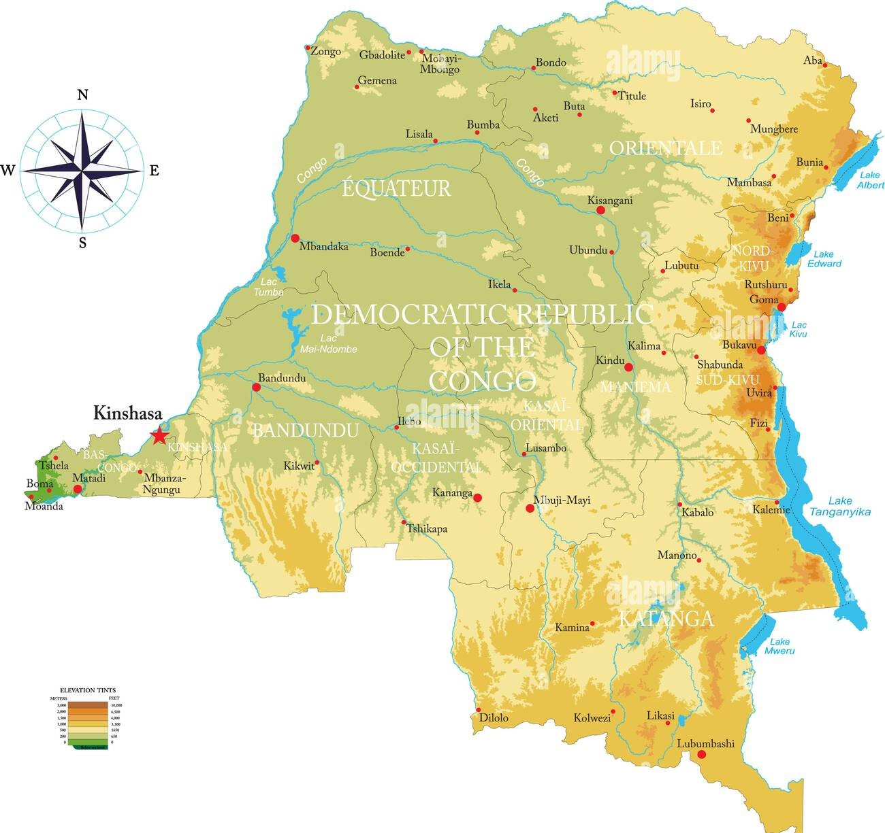

Zone di Estrazione del Coltan
La maggior parte del coltan viene estratta in regioni come Nord Kivu, Sud Kivu e Ituri. Queste aree, spesso instabili e controllate da gruppi armati, sono fondamentali per il mercato globale della tecnologia. L'accesso a queste miniere avviene in condizioni precarie e le popolazioni locali ne subiscono le conseguenze sociali e ambientali.

Le miniere si trovano in aree ricche di risorse ma molto instabili. La gestione di queste risorse avviene spesso senza regole, portando a gravi violazioni dei diritti umani.
- Condizioni di lavoro disumane
- Sfruttamento minorile
- Finanziamento di gruppi armati
Comprendere le caratteristiche delle principali aree di estrazione è fondamentale per intervenire efficacemente. Le città elencate svolgono ruoli strategici nel traffico del coltan.
| Città | Caratteristica principale |
|---|---|
| Walikale | Ricco di coltan |
| Shabunda | Miniere artigianali |
| Bisie | Estrazione su larga scala |
| Fizi | Zona strategica |